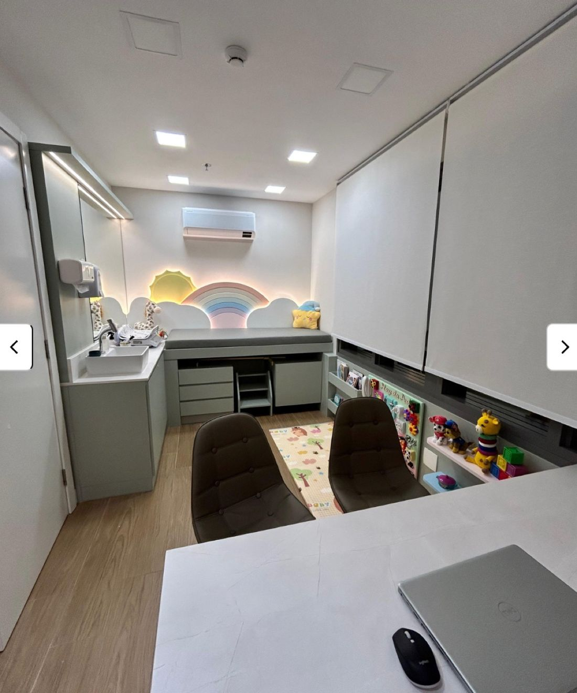
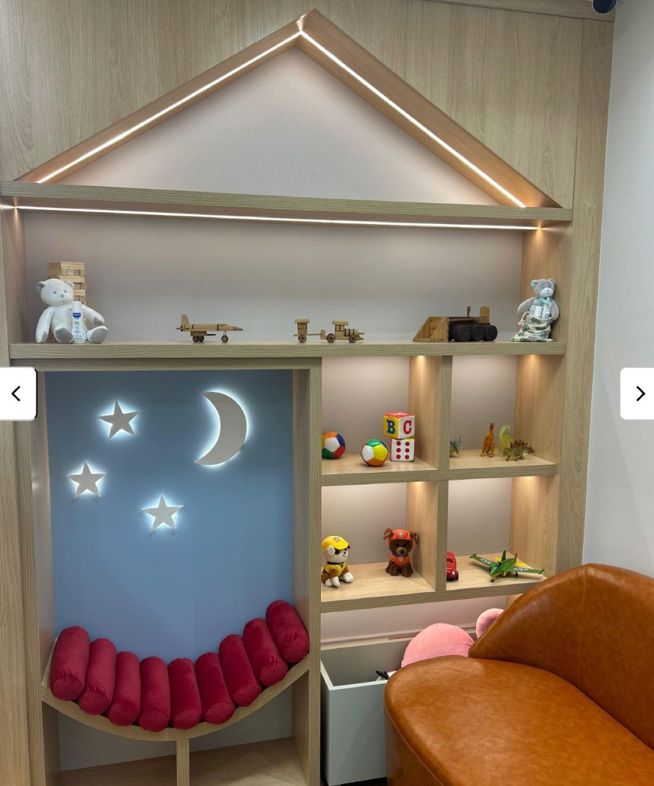
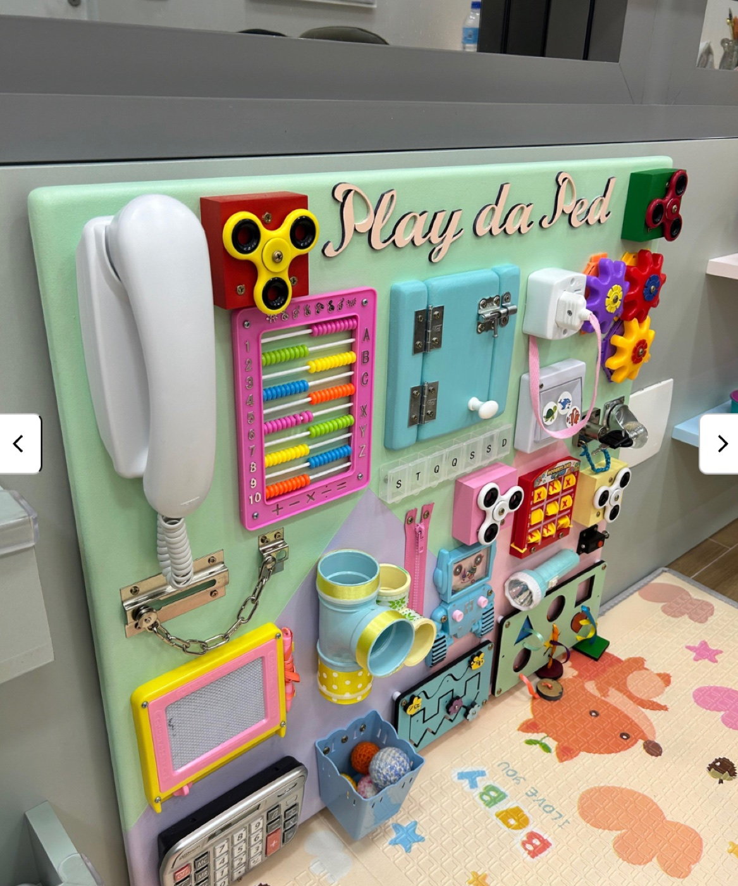

Pediatria e gastropediatria em Porto Alegre, do nascimento à pré-adolescência, com o tempo e a atenção que um diagnóstico completo exige.
Dra. Jaqueline Bordin · CRM/RS 43155 · RQE 34734 (Pediatria) · RQE 38332 (Gastropediatria)
Se alguma dessas frases já passou pela sua cabeça, você não está exagerando: existe um caminho para entender o que está acontecendo.
Refluxo, cólica ou dor abdominal recorrente sem diagnóstico claro
Dificuldade de ganho de peso ou desenvolvimento
Suspeita de intolerância ou alergia alimentar
Sintomas digestivos que já passaram por vários médicos sem resposta definitiva
Cada criança é acompanhada de forma individualizada, com histórico familiar, exame físico completo e conversa aberta.
Entenda como funciona a consultaInvestigação e acompanhamento de refluxo, dor abdominal recorrente, intolerâncias e alergias alimentares, com formação específica em gastroenterologia pediátrica (mestrado UFCSPA).
Acompanhamento contínuo do crescimento e desenvolvimento, do primeiro mês de vida à pré-adolescência, para você nunca precisar trocar de pediatra no meio do caminho.
Uma conversa antes do parto para já chegar em casa sabendo o que esperar nas primeiras semanas, e com um pediatra de confiança definido antes de precisar dele.
Exame não invasivo que ajuda a identificar intolerâncias alimentares (como à lactose) com precisão, sem a criança precisar passar por procedimentos mais desconfortáveis.
Conheça o espaço pensado para as crianças



Conversa sobre o contexto familiar e a história de saúde da criança.
Crescimento e desenvolvimento avaliados com precisão.
Revisão de exames já existentes, sem repetir o que não é necessário.
Espaço para tirar dúvidas sem pressa, com linguagem clara.
Dra. Jaqueline Bordin é pediatra (RQE 34734) e gastropediatra (RQE 38332), com mestrado em Pediatria pela UFCSPA e formação específica em gastroenterologia pediátrica. Atua com um princípio simples: todo sintoma tem uma causa, e toda causa merece investigação.
Poucos pediatras têm formação específica em gastropediatria.
Cada consulta é pensada para o caso, não para um roteiro padrão.
Acompanhamento do nascimento aos 12 anos, sem trocar de médico a cada fase.
Sem pressa de encerrar em 15 minutos.
Dra Jaque foi uma profissional sem igual. Sempre com atendimento humano, sem interlocutores e atencioso demais. A dra Jaque é a médica que faz além do básico, que torna o problema do seu filho o dela, que resolve, que acolhe e que CURA.
Nicoli Kloch
Desde o primeiro contato me senti acolhida, fui muito bem atendida. Dra Jaqueline é maravilhosa e atenciosa, prezando o bem estar da família. A estrutura da clínica também é ótima, atendimento pontual. Obrigada por tudo! ❤️
Laila Farias
A Dra. Jaque é maravilhosa, super humana e carinhosa com o nosso pequeno! Procuramos ela em um momento desesperador e ela nos acalmou e conseguiu identificar o que realmente nosso filho tinha. Somos imensamente gratos! Super recomendamos.
Érica Caetano
Dra Jaqueline é extremamente competente e atenciosa! Assertiva no tratamento gastro de nosso filho, trazendo resultado rápido e alívio para toda a família 🥰 Conduz a consulta e acompanhamento com empatia, leveza e muito profissionalismo!
Andressa Baumgartner Reitz
Minha filha hoje está com 1 ano e 4 meses. Conheci a Dra. Jaqueline por acaso e fizemos uma consulta on-line, seguida do retorno. Desde o primeiro atendimento percebi o quanto seu cuidado era diferenciado. Recebi explicações que, durante todo o período em que acompanhei outra profissional, nunca havia recebido.
A APLV parecia um grande obstáculo na nossa vida. Eu já estava em dieta de exclusão havia 1 ano e 2 meses e vivia com muito medo de qualquer tentativa de reintrodução. A Dra. Jaqueline me mostrou uma forma mais leve, segura e humanizada de conduzir esse processo. Também orientou a reposição de vitaminas para mim, explicou cada etapa do tratamento da minha filha e, principalmente, me devolveu a tranquilidade que eu havia perdido.
Antes, pensar em realizar os testes com leite significava imaginar minha filha sentindo dor. Hoje, após apenas um mês de acompanhamento, eu já não preciso mais manter a dieta de exclusão e minha filha está reagindo muito bem à reintrodução do leite, de forma gradual e segura.
Sou muito grata pelo acolhimento, pela competência e pelo cuidado com que conduziu nosso caso. Recomendo de coração a qualquer família que esteja enfrentando a APLV.
Lara Gonçalves
Em média uma hora: tempo dedicado a investigar o caso com calma, não só constatar sintomas.
O atendimento é exclusivamente particular. Isso permite manter o tempo de consulta necessário para um acompanhamento real, sem as limitações impostas por convênios.
De recém-nascidos a pré-adolescentes de até 12 anos.
Fale com a equipe pelo WhatsApp para valores atualizados.
Sim, há opção de estacionamento próximo ao consultório.
Agende agora e leve para casa mais do que um diagnóstico: leve clareza.
Atendimento particular · Consulta com duração aproximada de 1 hora · 0 a 12 anos